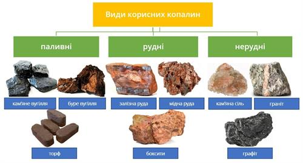

Родовища корисних копалин України.
- Закономірності поширення корисних копалин
- Паливні (горючі) корисні копалини.
- Рудні (металеві) корисні копалини.
- Криворізький залізорудний басейн

Закономірності поширення корисних копалин. Добувають корисні копалини, як правило, з невеликих глибин (до 1 тис. м). Отож вони тісно пов'язані з будовою саме верхніх шарів земної кори. Тому для різних тектонічних структур характерні певні групи корисних копалин. Корисні копалини осадового походження поширені переважно в межах тектонічних западин і плит платформених областей, а також передгірських крайових прогинів. Тобто вони характерні для структур, які в минулому були басейнами нагромадження осадового матеріалу, що зносився з прилеглих територій. Магматичні та метаморфічні породи потрібно шукати в горах з слідами вулканічних процесів, а також у кристалічних щитах, де близько до поверхні залягають давні магматичні та метаморфізовані породи. Формуються їхні родовища, як правило, на стиках літосферних плит. залягають давні магматичні та метаморфізовані породи. Наприклад, на континентах у місцях розвитку рифтових зон утворюються родовища марганцю, заліза та міді. У зоні зіткнення материкових літосферних плит виникають поклади міді, сірки, урану. До них належать у більшості випадків рудні корисні копалини, а також графіт, алмази тощо. Утворюються вони в результаті остигання магми у тріщинах земної кори, метаморфізації магматичних чи осадових порід під впливом високої температури і тиску. У межах України давні магматичні і метаморфічні породи виходять на поверхню або залягають на невеликих глибинах Українського кристалічного щита. З метаморфізованими архейськими та протерозойськими породами цього масиву пов'язані великі поклади залізних руд (Криворізьке, Кременчуцьке, Білозерське, Керчинське родовища), нікелю (Побузьке родовище), титану (центральна частина Придніпровської височини), урану (південна частина Придніпровської височини). Метаморфічного походження і значні поклади графіту (Завалівське родовище). З явищами вулканізму і викидами гарячої води тріщинами земних надр пов'язані свинцево-цинкові та ртутні руди Донбасу, свинцево-цинкові – Закарпаття. В Україні розвідано 90 видів корисних копалин, які зосереджено майже у 8 тис. родовищ. При господарському аналізі корисних копалин прийнято класифікацію корисних копалин за походженням - паливні, рудні, нерудні.
Паливні (горючі) корисні копалини. На території України знаходяться Донецький і Львівсько-Волинський кам'яновугільні та Дніпровський буровугільний басейни. Донецький басейн у межах України (Великий Донбас) займає площу понад 50 тис. км2 (тут залягає коксівне, газове вугілля, антрацит.) Донецький басейн є основним у вугільній промисловості країни. Запаси вугілля оцінюються в 109,0 млрд. тонн в шарах потужністю 0,6-1,2 м. З 1949 р. освоюється Західний Донбас, розташований на північному сході Дніпропетровської області і частково в Харківській області. Нині в Донбасі більш як сто ділянок, загальні запаси яких становлять близько 12 млрд.Львівсько-Волинський басейн знаходиться на заході України, має площу близько 10 тис. км2. Максимальна потужність кам'яновугільних шарів – 2,8 м, вугілля сірчисте, використовується як енергетична сировина і для коксування. Звичайним шахтовим способом тут можна добувати лише 30% запасів вугілля. Тому потрібно розширювати добування шляхом підземної газифікації в районах з малопотужними шарами вугілля. Дніпровський буровугільний басейн займає площу близько 150 тис. км2. Його родовища знаходяться в Кіровоградській, Дніпропетровській і Житомирській областях. Загальні розвідані запаси становлять 6 млрд. тонн. Родовища бурого вугілля відомі також в Полтавській і Харківській областях, в Придністров'ї, Передкарпатті і Закарпатті. Родовища горючих сланців є в Карпатах, на Поділлі, в Кіровоградській області (найбільше Бовтиське родовище). Торфові родовища знаходяться переважно на Поліській низовині, в річкових долинах. В Україні виявлено за останні роки близько 150 нових нафтових, нафтогазових, газоконденсатних і газових родовищ. Родовища нафти і газу зосереджено в трьох регіонах: Карпатському, Дніпровсько-донецькому, Причорноморсько-кримському. Карпатський нафтогазоносний регіон охоплює родовища Передкарпаття, Українських Карпат і Закарпаття. Більшість нафтових і газових родовищ знаходяться у Львівській та Івано-Франківській областях і приурочене до Передкарпатського прогину. Тут виявлено понад 30 родовищ газу, багато з яких в результаті тривалої експлуатації майже повністю вичерпано. Найбільшими нафтогазовими родовищами є Долинське, Бориславське, Волицьке, Битківське, Угерське, Залужанське, Дашавське. Промислове значення мають і нещодавно відкриті газові родовища Закарпаття. Понад 80% видобутку нафти і газу припадає на Дніпровсько-Донецький нафтогазоносний регіон. Найбільшими газовими родовищами є Шебелинське, Західнохрестищенське і Єфремівське (сумарні запаси понад 970 млрд. м3), нафтовими – Леляківське, Глинсько-Розбишівське, нафтогазовими – Гнідинцівське, Качанівське, Яблунівське. Причорноморський нафтогазоносний регіон займає територію Причорноморської низовини та степового рівнинного Криму. У ньому розвідано понад 60 родовищ нафти і газу. Найбільшими серед них є Джанкойське, Глібівське, Штормове, Казантипське. Вважаються перспективними щодо газу і нафти глибинні ділянки земної кори та підводні надра Чорного моря. Перспективними щодо газу є ділянки Чорного моря на глибинах 700-750 м. На глибині 300-350 м існують умови для утворення сумішей вуглеводневих газів. Про можливість їх добування свідчить досвід інших країн. тонн.
Рудні (металеві) корисні копалини. Україна має багаті поклади залізних і марганцевих руд (відповідно 5% і 20% запасів світу), на основі яких розвивається її чорна металургія. Рудні концентрати також вивозять в інші країни. В Україні освоєно 35 родовищ залізних руд осадового і метаморфічного походження. Загальні запаси залізних руд складають 27 млрд. т. Багаті залізні руди зосереджені в Криворізькому залізорудному басейні, Кременчуцькому і Білозерському залізорудних районах, дещо бідніші – у Керченському басейні
Криворізький залізорудний басейн – один з найбільших залізорудних басейнів світу. Залізні руди тут добувалися ще скіфами в V-ІV ст. до н. е. Криворізький басейн приурочений до центральної частини Українського щита і займає площу близько 300 км2 (Дніпропетровська і частково Кіровоградська області). Основне промислове значення мають магнетитові і залізисті кварцити, в результаті збагачення яких дістають концентрат з вмістом заліза до 65%. У Кривбасі відомо понад 300 родовищ багатих залізних руд, їх розвідані запаси становлять 18 млрд. тонн. Нині видобування залізних руд ведеться вже на глибині 1000 м. Найперспективнішим районом на багаті залізні руди є Саксаганське рудне поле. Кременчуцький залізорудний район приурочений до північно-східного схилу Українського щита (Полтавська область). Вміст заліза в рудах становить 27-40%. Розвідані задаси магнетитових кварцитів Кременчуцької магнітної аномалії оцінюються в 4 млрд. тонн. Білозерський залізорудний район тягнеться смугою, що має 20 км завширшки і 65 км завдовжки південним схилом Українського щита (Запорізька область). Тут зосереджені родовища залізистих і магнетитових, кварцитів. У багатих рудах вміст заліза становить 58-61%. За запасами багатих руд цей район поступається тільки Кривбасу. Значна глибина залягання руд робить можливим їх видобування тільки шахтним способом. У Керченському залізорудному басейні залягає бурий залізняк із вмістом заліза до 40%. Руди залягають близько до поверхні і видобуток можливий відкритим способом. Його запаси становлять 1,8 млрд. тонн. Геологи вважають, що перспективним на залізну руду є дно Азовського моря.
знаходяться родовища нікелевих руд (Побузьке, Деренюське ).